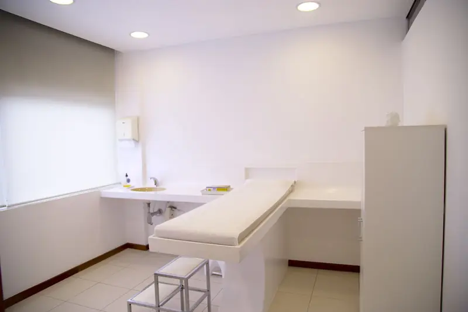

วิเคราะห์ผิวหน้า 3D จากสแกนใบหน้า

แท็บวิเคราะห์ผิวหน้า 3D ของ Faceliora Clinic อ่านสแกนใบหน้า 3D ของผู้รับคำปรึกษา แล้วไฮไลต์ตำแหน่งที่พบปัญหาผิวแต่ละแบบ ในแบบที่เครื่องวิเคราะห์ผิวนำเสนอ แพทย์จึงพาผู้รับคำปรึกษาดูไปทีละเรื่องได้ ใช้สแกนที่คลินิกมีอยู่แล้ว ไม่ต้องถ่ายรูปเพิ่ม ทุกผลเป็นข้อมูลให้แพทย์ตรวจทาน ไม่ใช่การวินิจฉัย
รายละเอียดความสามารถเป็นข้อมูลที่เว็บไซต์เดิมอธิบาย ยังไม่ได้ยืนยันด้วยการทดสอบผลิตภัณฑ์
ประเด็นสำคัญ
- ปัญหาผิวที่หาบนสแกน: รูขุมขน สิวหัวดำ จุดด่างดำ รอยคล้ายฝ้า ตุ่มแดง ผิวแดง และริ้วรอย ส่วนร่องแก้มและร่องใต้ตาวัดจากรูปทรง 3D
- แสงจำลองสามแบบ: แสงปกติ แสงแดงสำหรับเลือดใต้ผิว และ UV จำลองสำหรับเม็ดสี
- ปริมาณบอกเป็น “พบเล็กน้อย” “พบบ้าง” หรือ “พบมาก” ไม่ใช่เกรด และเป็นข้อมูลให้แพทย์ตรวจทาน
วิเคราะห์อะไรบ้าง
เมื่อเปิดแท็บวิเคราะห์ผิว ใบหน้าจะแสดงทุกปัญหาที่พบพร้อมกัน เลือกหัวข้อจากเมนูเพื่อดูทีละเรื่องพร้อมรายงานของเรื่องนั้น
- แสงปกติ
- แสงแดง
- แสง UV
- จุดด่างดำ
- ตุ่มแดง
- รูขุมขน
- สิวหัวดำ
- ริ้วรอย
- ผิวแดง
- รอยคล้ายฝ้า
- เพื่อให้แพทย์ตรวจทาน
- ไม่ใช่การวินิจฉัย
- รูขุมขนกว้างและสิวหัวดำ
- จุดด่างดำ ไฝ และกระ
- ปื้นสีน้ำตาลลักษณะคล้ายฝ้า
- ตุ่มแดงลักษณะสิวอักเสบ
- ผิวแดง
- ริ้วรอย
- ร่องแก้มและร่องใต้ตา วัดจากรูปทรง 3D ของสแกน
- รอยคล้ำใต้ตาและสัดส่วนใบหน้า
นำเสนอแบบรายงานทางการแพทย์
รอยที่ชี้ได้ เช่น จุดด่างดำ ตุ่มแดง หรือรูขุมขนกว้าง จะมีวงล้อมตรงที่พบ สิวหัวดำเป็นจุด รอยที่ไม่แน่ใจจะจางกว่า เม็ดสีและผิวแดงแสดงเป็นพื้นที่ ริ้วรอยเป็นเส้น ส่วนร่องเป็นบริเวณที่วัดแล้ว แผงด้านข้างบอกชื่อทางการแพทย์ ตารางตามบริเวณของมาตรวัดที่แพทย์ใช้ เช่น GAGS สำหรับสิว และ mMASI สำหรับฝ้า รายการรอยที่พบ และวิธีที่ใช้หา
ปริมาณบอกเป็น “พบเล็กน้อย” “พบบ้าง” หรือ “พบมาก” หน้านี้ไม่ให้เกรดหรือคะแนนผิว เพราะสแกนให้ข้อมูลไม่ครบตามที่มาตรวัดของแพทย์ต้องการ
แสงปกติ แสงแดง และ UV จำลอง
ปุ่มแสงสามปุ่มข้างใบหน้าสลับระหว่างแสงปกติ แสงแดง และ UV จำลอง ภาพแสงแดงและ UV เป็นภาพจำลอง โปรแกรมหักแสงของห้องออกก่อน แล้วแยกสีของสแกนเป็นเม็ดสีเมลานินและฮีโมโกลบิน จึงแสดงเลือดใต้ผิวและเม็ดสีบนใบหน้าได้ หัวข้อผิวแดงเปิดที่แสงแดง และหัวข้อฝ้าเปิดที่ UV จำลอง
ภาพเหล่านี้ไม่ใช่ภาพถ่าย UV การเรืองแสง ความมันของผิว และค่าอื่นของเครื่องวิเคราะห์ผิวแบบตู้ต้องใช้กล้องเฉพาะ จึงไม่ได้แสดง
คำนวณบนคอมพิวเตอร์ของคลินิก
การวิเคราะห์ทำบนคอมพิวเตอร์ของคลินิกจากสแกน ไม่ใช้รูปถ่าย และไม่ส่งไปคำนวณที่อื่น สรุปผลถูกเก็บบนเซิร์ฟเวอร์เฉพาะเคสที่ผู้รับคำปรึกษายินยอมไว้ และไม่มีข้อมูลผิวใดถูกใช้ในสถิติการใช้งาน
สิ่งที่การวิเคราะห์เป็นและไม่เป็น
ผิวในสแกนจากมือถือเรียบกว่าภาพความละเอียดสูงจากเครื่องวิเคราะห์ผิวแบบตู้ รอยที่เล็กมากจึงอาจไม่ถูกพบ และสิ่งที่พบเป็นข้อเสนอให้แพทย์ยืนยัน การวิเคราะห์ไม่ได้วินิจฉัยโรคหรือแนะนำการรักษา
ทุกภาพใน Faceliora Clinic เป็นภาพจำลองเพื่อการสื่อสาร ไม่ใช่การรับประกันผลการรักษา และไม่แทนการตรวจและคำแนะนำของแพทย์
ภาพจำลองไม่ใช่การวินิจฉัย การทำนาย หรือการรับประกันผลการรักษา